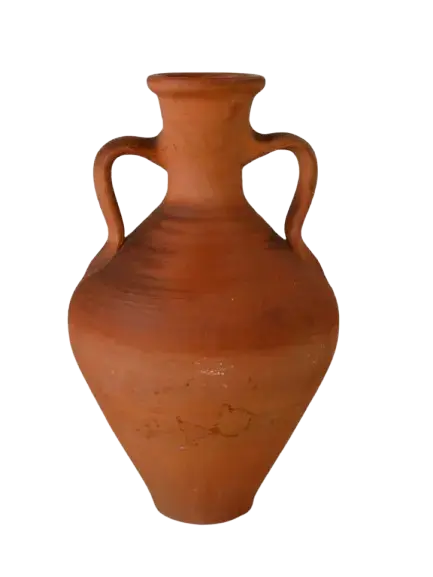
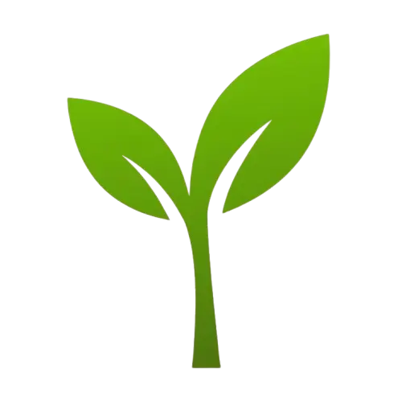

Soutenir et valoriser l'artisanat coopératif marocain
Taawon est une plateforme dédiée à la promotion des coopératives artisanales à travers le Maroc. Notre mission est d'offrir une vitrine moderne, équitable et accessible pour préserver le patrimoine culturel et autonomiser les artisans locaux.
Solidarité & Équité
Accompagner les coopératives vers la numérisation, l'accès aux marchés internationaux et l'adoption de pratiques écoresponsables.

Art & Tradition
Protéger les savoir-faire ancestraux et transmettre les techniques authentiques d'artisanat marocain aux générations futures.

Innovation Durable
Accompagner les coopératives vers la numérisation, l'accès aux marchés internationaux et l'adoption de pratiques écoresponsables.
Frise Chronologique
Les étapes clés qui ont façonné l'évolution de Taawon.
Naissance de l'Initiative:
Lancement d'une étude de terrain approfondie dans le Sud du Maroc pour identifier les défis majeurs de numérisation des coopératives de tissage et de poterie.
Lancement de la Plateforme:
Déploiement du premier portail web regroupant 30 coopératives pilotes et amorçage du programme de formation au e-commerce et au contrôle qualité.
Expansion Nationale:
Atteinte du cap des 100 coopératives partenaires couvrant l'ensemble des 12 régions du Maroc, avec intégration de solutions logistiques dédiées.
Certification:
Obtention du label d'Économie Sociale et Solidaire et numérisation intégrale de la traçabilité des produits faits main pour l'exportation.
L'Équipe de l'Association
Une équipe passionnée et engagée sur le terrain aux côtés des artisans.